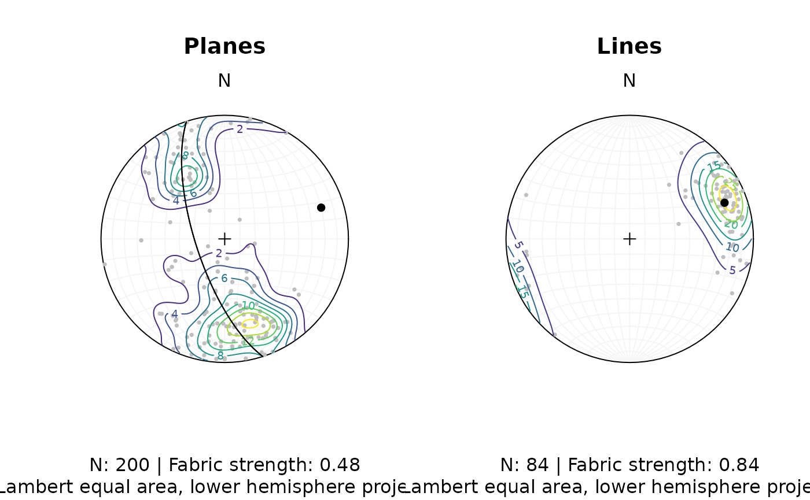

2. Stereographic projections
Tobias Stephan
2025-08-08
Source:vignettes/2_Stereographic_projection.Rmd
2_Stereographic_projection.RmdImport and convert to spherical objects:
data(example_planes)
planes <- Plane(example_planes$dipdir, example_planes$dip)
lines <- Line(example_lines$trend, example_lines$plunge)Stereographic projection
Lambert equal area, lower hemisphere projection is the default plotting setting.
stereoplot()
stereo_point(lines, col = "#B63679", pch = 19, cex = .5)
stereo_point(planes, col = "#000004", pch = 1, cex = .5)
legend("topright", legend = c("Lines", "Planes"), col = c("#B63679", "#000004"), pch = c(19, 1), cex = 1)
title(main = "Example data", sub = "Lambert equal area, lower hemisphere projection")To change to equal angle stereographic, upper hemisphere projection
stereoplot(earea = FALSE)
stereo_point(lines, col = "#B63679", pch = 19, cex = .5, earea = FALSE, upper.hem = TRUE)
stereo_point(planes, col = "#000004", pch = 1, cex = .5, earea = FALSE, upper.hem = TRUE)
legend("topright", legend = c("Lines", "Planes"), col = c("#B63679", "#000004"), pch = c(19, 1), cex = 1)
title(main = "Example data", sub = "Equal angle stereographic, upper hemisphere projection")Adding great circles:
stereoplot(guides = FALSE)
stereo_greatcircle(planes, col = "lightgrey", lty = 1)
stereo_point(planes, col = "#000004", pch = 1, cex = .5)Statistics
example_lines$quality <- ifelse(is.na(example_lines$quality), 6, example_lines$quality) # replacing NA values with 6
line_weightings <- 6 / example_lines$quality
lines_mean <- v_mean(lines, w = line_weightings)
lines_variance <- v_var(lines, w = line_weightings)
lines_delta <- v_delta(lines, w = line_weightings)
lines_confangle <- v_confidence_angle(lines, w = line_weightings)
c(
"Variance" = lines_variance,
"63% cone" = lines_delta,
"Confidence angle" = lines_confangle
)
#> Variance 63% cone Confidence angle
#> 0.1938084 36.2745102 6.9017035
stereoplot(guides = FALSE)
stereo_point(lines, col = "lightgrey", pch = 1, cex = .5)
stereo_point(lines_mean, col = "#B63679", pch = 19, cex = 1)
stereo_smallcircle(lines_mean, d = lines_confangle, col = "#E65164FF")
stereo_smallcircle(lines_mean, d = lines_delta, col = "#FB8861FF")
legend("topright", legend = c("Mean line", "95% confidence cone", "63% data cone"), col = c("#B63679", "#E65164FF", "#FB8861FF"), pch = c(19, NA, NA), lty = c(NA, 1, 1), cex = .75)Orientation tensor and eigenvectors:
planes_eigen <- or_eigen(planes)
stereoplot(guides = FALSE)
stereo_point(planes, col = "lightgrey", pch = 1, cex = .5)
stereo_greatcircle(planes_eigen$vectors, col = viridis::magma(3), lty = 1)
stereo_point(planes_eigen$vectors, col = viridis::magma(3), pch = 19, cex = 1)
legend("topright", legend = c("Eigenvectors 1", "Eigenvectors 2", "Eigenvectors 3"), col = viridis::magma(3), pch = 19, cex = .75)Fabric plots
VollmerPlot(planes, col = "#000004", pch = 1, cex = 2)
VollmerPlot(lines, add = TRUE, col = "#B63679", pch = 19, cex = 2)
legend("topright", legend = c("Lines", "Planes"), col = c("#B63679", "#000004"), pch = c(19, 1), cex = 1)Density plots
example_planes$quality <- ifelse(is.na(example_planes$quality), 6, example_planes$quality) # replacing NA values with 6
plane_weightings <- 6 / example_planes$quality
fabric_p <- or_shape_params(planes)$Vollmer["D"]
my_planes_eig <- or_eigen(planes)
fabric_l <- or_shape_params(lines)$Vollmer["D"]
par(mfrow = c(1, 2))
stereoplot(guides = TRUE, col = "grey96")
stereo_point(planes, col = "grey", pch = 16, cex = .5)
stereo_density(planes, type = "contour", add = TRUE, weights = plane_weightings)
stereo_point(as.plane(planes_eigen$vectors[3, ]), col = "black", pch = 16)
stereo_greatcircle(as.plane(planes_eigen$vectors[3, ]), col = "black", pch = 16)
title(
main = "Planes",
sub = paste0(
"N: ", nrow(planes), " | Fabric strength: ", round(fabric_p, 2),
"\nLambert equal area, lower hemisphere projection"
)
)
stereoplot(guides = TRUE, col = "grey96")
stereo_point(lines, col = "grey", pch = 16, cex = .5)
stereo_density(lines, type = "contour", add = TRUE, weights = line_weightings)
stereo_point(lines_mean, col = "black", pch = 16)
title(
main = "Lines",
sub = paste0(
"N: ", nrow(lines), " | Fabric strength: ", round(fabric_l, 2),
"\nLambert equal area, lower hemisphere projection"
)
)